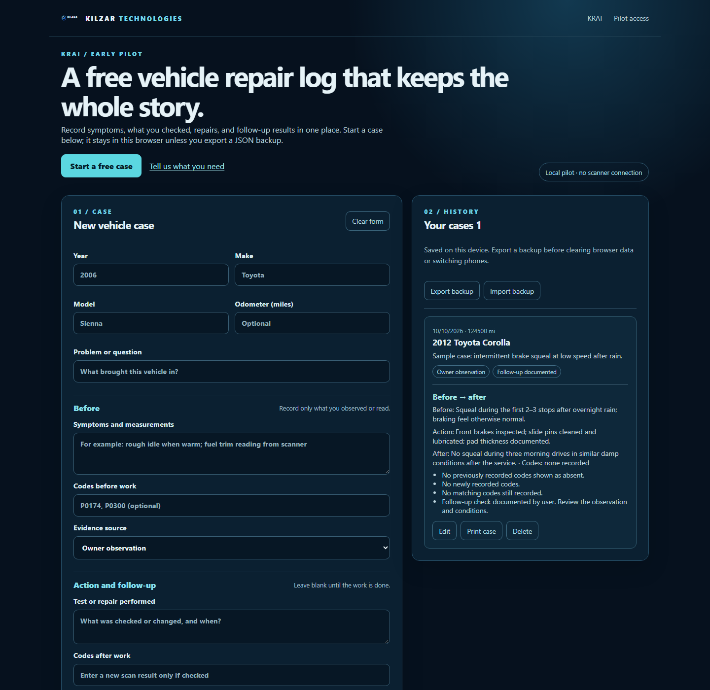
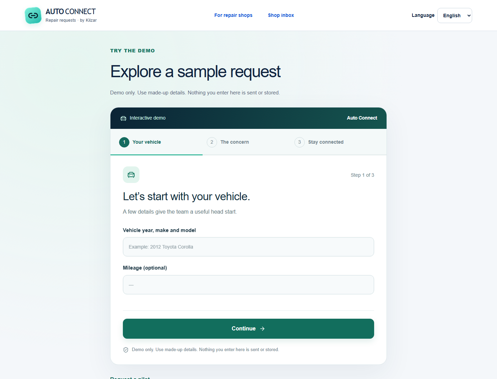

PLATFORM / IN DEVELOPMENT
Kilzar KRAI
Vehicle-native intelligence designed around longitudinal memory, evidence provenance, learned baselines, cross-system reasoning, and post-repair verification.
Explore the platform →Kilzar KRAI is an aftermarket vehicle-intelligence platform in development: persistent per-vehicle history, evidence-backed diagnostic reasoning, repair-effect learning, and verification designed to stay close to the machine and keep people in control.
KRAI is the long-term intelligence platform. Casebook and Auto Connect are practical on-ramps available today for vehicle owners and repair shops.
Vehicle-native intelligence designed around longitudinal memory, evidence provenance, learned baselines, cross-system reasoning, and post-repair verification.
Explore the platform →
Record symptoms, evidence, repairs, and follow-up checks so a vehicle's history stays useful instead of disappearing between visits.
Open Casebook →
A lightweight multilingual customer-intake and callback layer for independent repair shops—built to complement existing shop software, not replace it.
English · Spanish · Arabic · New / Contacted / Booked / Closed
Explore Auto Connect →Most diagnostic tools tell you what the vehicle reports now. KRAI is being built to understand what changed, what evidence supports a hypothesis, what repair was performed, and whether the result actually improved.
Keep observations, symptoms, diagnostic evidence, interventions, and outcomes connected over time.
Link diagnostic hypotheses back to raw evidence, provenance, uncertainty, and the checks that support them.
Compare the vehicle after intervention against its prior baseline and learn what actually changed.
The core KRAI development case is longitudinal: baseline → deviation → evidence → diagnosis → intervention → post-repair verification → updated baseline.
Build a vehicle-specific picture of normal behavior.
FOUNDATIONConnect symptoms and measurements to what changed.
IN DEVELOPMENTPreserve raw evidence and provenance behind each hypothesis.
IN DEVELOPMENTRank causes, uncertainty, and the next useful checks.
IN DEVELOPMENTKeep the repair and relevant context in lifetime history.
FOUNDATIONCompare post-repair behavior and update the learned baseline.
ACTIVE PRIORITYCasebook is a real, usable step toward longitudinal vehicle memory. It does not diagnose or connect to the vehicle; it gives owners a structured way to preserve symptoms, evidence, repairs, and follow-up checks now.
The architecture is being shaped around durable vehicle knowledge and explicit authority boundaries—not a chatbot that happens to sit in a car.
Per-vehicle history and learned baselines are treated as first-class system state.
Local processing and resilience guide the architecture so core intelligence does not depend entirely on remote services.
Development diagnostic interfaces are read-only today; no public vehicle-control features are offered. Any future action path must be capability-gated, auditable, and fail closed.
Use Casebook to preserve symptoms, repairs, evidence, and what happened afterward.
Use Casebook →Use Auto Connect to collect repair requests in three languages and organize callbacks without replacing your shop-management system.
Explore Auto Connect →Kilzar is deliberately separating what exists today from what is still under development.
The company foundation and operating infrastructure were put in place.
Development focused on keeping vehicle-specific history connected with traceable diagnostic evidence and repeatable replay testing.
A usable repair-history tool became the first public KRAI-adjacent product.
Kilzar prepared a multilingual repair-request and callback workflow for early independent-shop pilots.
The active KRAI priority is a reproducible vehicle case that connects baseline, change, evidence, repair, and post-repair verification before broader feature expansion.
Why should every repair visit start from zero?
Kilzar Technologies was founded to build intelligent systems that connect software with real-world machines. KRAI applies that mission to vehicles: remembering history, following evidence, learning from interventions, and making uncertainty visible rather than hiding it.
The company is developing carefully: diagnostic interfaces remain read-only today, proof comes before broader claims, and any future vehicle interaction must pass explicit safety and authority boundaries.
Talk with Kilzar Technologies →The full KRAI platform is in active research and development. KRAI Casebook is live today. Kilzar Auto Connect is accepting inquiries for early repair-shop pilots.
No public KRAI product currently controls a vehicle. Development diagnostic interfaces are read-only, and no public vehicle-control features are offered. Casebook itself does not connect to the vehicle or provide automated diagnosis.
KRAI's development target is persistent per-vehicle history, evidence provenance, learned baselines, cross-system reasoning, and post-repair verification. Conversation is one interface to that vehicle-specific context.
It is an architectural direction: keep important processing and vehicle history close to the user where practical, while preserving resilience and privacy. It is not a claim that every planned capability is already fully offline.
Independent shops can explore Auto Connect now or contact Kilzar to discuss pilot use, feedback, integrations, or future KRAI collaboration.
Contact Kilzar →Repair shops, automotive partners, researchers, accelerator teams, investors, and press can reach Kilzar Technologies directly.